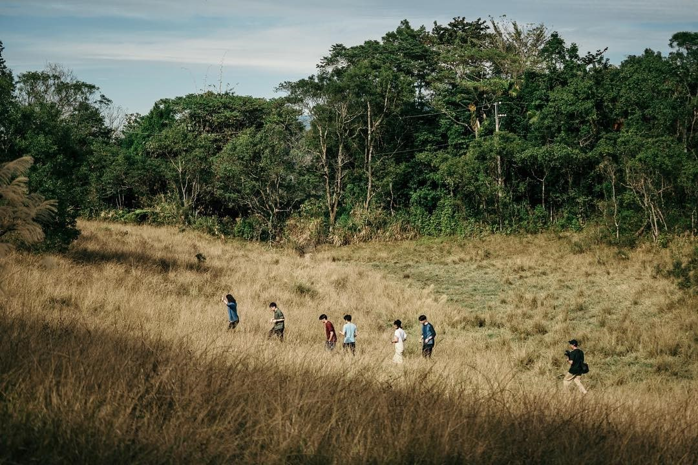

《在田中央》
選擇長期定居在宜蘭過活與工作，這群建築師同時是居民，以及專業者。
二十多年來蔓生而出一大片開放的、從小步道至大橋樑的公共建築群。

《宜蘭一瞥》
選擇長期定居在宜蘭過活與工作，這群建築師同時是居民，以及專業者。
二十多年來蔓生而出一大片開放的、從小步道至大橋樑的公共建築群。
《複眼人》
選擇長期定居在宜蘭過活與工作，這群建築師同時是居民，以及專業者。
二十多年來蔓生而出一大片開放的、從小步道至大橋樑的公共建築群。